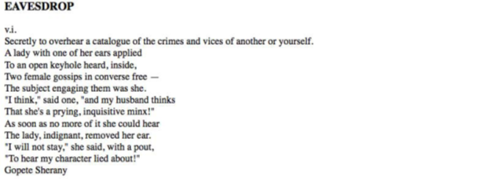
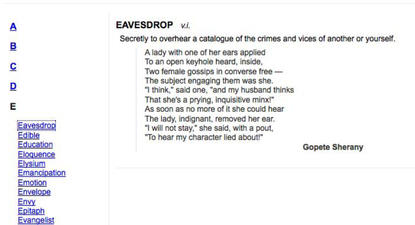
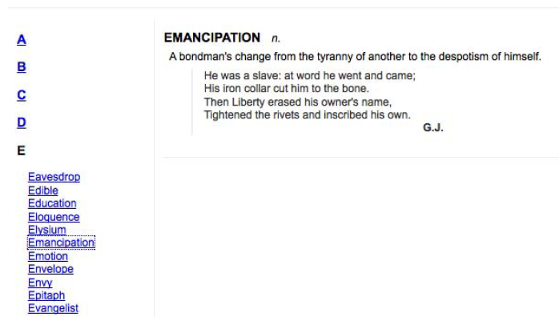
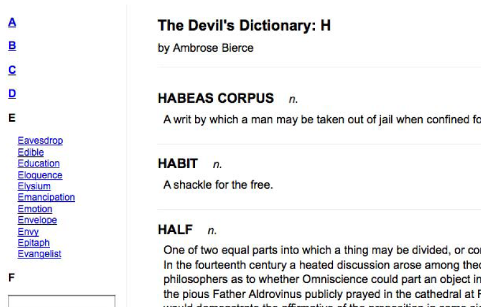
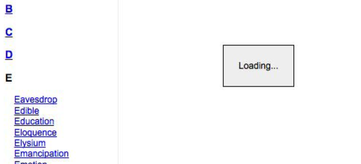
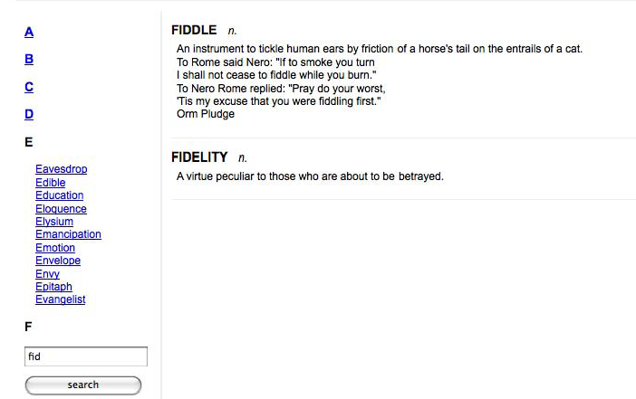
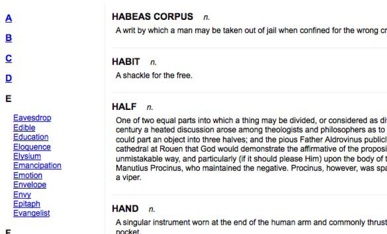

Chúng ta đã xem qua 4 định dạng cho dữ liệu bên ngoài, mỗi một dạng đều được xử lý bởi những hàm thuần AJAX của jQuery. Chúng ta cũng đã xác minh cả 4 định dạng đều có thể xử lý được tình huống là tải thông tin cho trang mỗi khi người dùng yêu cầu chứ không phải trước đó. Như vậy thì định dạng nào phù hợp với ứng dụng nào?
HTML không mất nhiều công để tải. Dữ liệu bên ngoài ngoài có thể được tải và chèn vào trang với một phương thức mà thâm chí không cần có hàm truy hồi. Chúng ta cũng không cần sử dụng những phương thức di chuyển trong dữ liệu để thêm một đoạn HTML vào trang. Trái lại, dữ liệu này không có cấu trúc phù hợp để có thể tái sử dụng cho những ứng dụng khác. Mà nó được liên kết chặt chẽ với thành phần mà nó sẽ được chèn vào.
JSON thì được cấu trúc cho việc tái sử dụng đơn giản. Định dạng này cô đọng và dễ đọc. Nhưng chúng ta phải di chuyển trong cấu trúc dữ liệu để lấy thông tin hiển thị ra trang web, nhưng điều này cũng dễ dàng được thực hiển bởi những kỹ thuật JavaScript tiêu chuẩn. Bởi vì tệp tin có thể được tải chỉ bằng một cuộc gọi đến phương thức JavaScript eval(), phương thức này đọc tệp JSON hết sức mau lẹ. Tuy nhiên cách sử dung eval() cũng chất chứa một chút rủi ro. Những lỗi lập trình trong tệp JSON có gây ra lỗi ẩn và tạo ra hiệu ứng phụ không mong muốn trên trang, cho nên dữ liệu phải được viết hết sức cẩn thận.
Tệp JavaScript có tính linh động nhất nhưng nó lại không thực sự là một cơ chế lưu trữ dữ liệu. Bởi vì nó mang hơi hướng của ngôn ngữ lập trình, nó không thể cung cấp cùng một loại thông tin cho những hệ thống khác nhau. Thực tế việc tải một tệp JavaScript có nghĩa là những bộ xử lý mà ít khi được dùng tới có thể để tách rời ở một tệp bên ngoài, như thế chúng ta có thể giảm được dung lượng của mã và chỉ tải nó khi cần thiết.
Tài liệu XML cực kỳ cơ động. Bởi vì XML đã trở thành ngôn ngữ chung cho thế giới mạng, cung cấp dữ liệu dưới dạng này thì nó rất có thể được tái sử dụng ở đâu đó. Ví dụ Flickr, del.icio.us và Upcoming đều xuất dữ liệu của họ dưới dạng XML, và được rất nhiều các trang khác tái sử dụng rất sáng tạo. Tuy nhiên định dạng XML hơi cồng kềnh và mất nhiều thời gian để tải và thao tác hơn những định dạng khác.
Với những tính năng như ở trên, thì bạn thấy cách dễ nhất để cung cấp dữ liệu từ bên ngoài là dưới dạng HTML miễn là dữ liệu đó không cần phải được sử dụng cho những ứng dụng khác. Trong trường hợp dữ liệu sẽ được tái sử dụng và những ứng dụng khác có thể bị ảnh hưởng, thì JSON thường là lựa chọn tốt bởi vì nó có hiệu suất làm việc cao và dung lượng nhỏ. Nhưng khi ứng dụng là điều mà bạn không chắc chắn, thì XML là lựa chọn an toàn nhất để có tính tương kết cao nhất.
Trên tất cả những điều trên, chúng ta phải xác định xem dữ liệu đã có sẵn chưa. Nếu nó đã có sẵn rồi thì rất có thể nó rơi vào một trong những định dạng trên và như thế thì bạn khỏi cần phải mất công tự quyết định.
Những ví dụ của chúng ta cho đến giờ chỉ tập trung vào việc lấy dữ liệu tĩnh từ web server. Tuy nhiên, AJAX chỉ thực sự mạnh mẽ khi mà server có thể tự động truyền dữ liệu dựa vào thông tin được nhập từ trình duyệt web. JQuery có thể giúp chúng ta rất nhiều trong quá trình này, những phương thức chúng ta đã học đến nay có thể được cải tiến một chút để cho quá trình truyền tải dữ liệu trở thành đường 2 chiều.
Lưu ý: những ví dụ sắp tới đòi hỏi phải tương tác với web server, cho nên đây là lần đầu tiên trong cuốn sách chúng ta sẽ sử dụng mã server-side. Trong những phần tới chúng ta sẽ sử dụng ngôn ngữ lập trình PHP, đây là ngôn ngữ được sử dụng rộng rãi và hoàn toàn miễn phí. Chúng ta sẽ không đề cập đến cách tạo web server trong khuôn khổ của cuốn sách này. Bạn có thể tìm các nguồn hướng dẫn như ở trang Apache.org hoặc php.net. Trên izwebz cũng có một vài bài hướng dẫn cách tạo localhost để làm việc với PHP.
Để minh họa cho quá trình giao tiếp giữa người dùng và server, chúng ta sẽ viết một đoạn mã mà nó có thể chỉ gửi một mục từ trong từ điển đến trình duyệt cho mỗi một lệnh truy vấn. Mục từ được chọn sẽ dựa vào tham số được gửi qua trình duyệt. Mã của chúng ta sẽ lấy dữ liệu từ cấu trúc dữ liệu trong như sau:
Ở trong những ứng dụng thật sự thì dữ liệu phải được lưu trữ trong cơ sở dữ liệu và chỉ được tải khi hỏi. Bởi vì dữ liệu là một phần của đoạn mã trên cho nên việc viết mã để lấy dữ liệu ra khá đơn giản. Chúng ta sẽ xem xét dữ liệu đã được tạo ra và viết mã HTML để hiển thị nó:
Bây giờ khi đoạn mã được truy vấn thì tệp e.php được gọi, và nó sẽ trả về một đoạn HTML phù hợp với điều kiện được gửi qua tham số của GET. Ví dụ khi bạn truy cập đoạn mã với e.php?term=eavesdrop, chúng ta sẽ có được.
Một lần nữa chúng ta thấy được trang kết quả không có chút định dạng nào bởi vì CSS chưa được áp dụng vào trang này.
Bởi vì chúng ta sẽ nghiên cứu dữ liệu được truyền tải đến server như thế nào, chúng ta sẽ sử dụng một phương thức khác để lấy mục từ thay vì chỉ sử dụng một dạng nút đơn từ trước tới giờ. Dưới đây là đoạn mã HTML
Bây giờ chúng ta cần mã JavaScript gọi đến PHP với tham số phù hợp. Chúng ta có thể làm được việc này với cơ chế .load(), gán chuỗi truy vấn vào URL và sau đó thì truy xuất dữ liệu trực tiếp với địa chỉ như kiểu e.php?term=eavesdrop. Tuy nhiên, thay vì làm như vậy chúng ta sẽ sử dụng jQuery để xây dựng chuỗi truy vấn dựa vào biểu đồ mà ta cung cấp cho hàm $.get():
Tới giờ chúng ta đã thấy những giao tác AJAX mà jQuery cung cấp, cách làm việc của hàm này rất quen thuộc. Điều khác biệt duy nhất là ở tham số thứ 2, nó cho phép chúng ta cung cấp một biểu đồ key-value và nó là một phần của chuỗi truy vấn. Trong trường hợp trên, giá trị key luôn là term nhưng value sẽ được lấy từ chữ của mỗi đường liên kết. Nên nếu bây giờ bạn nhấp chuột vào đường liên kết đầu tiên trong danh sách thì định nghĩa của từ đó sẽ xuất hiện.
Tất cả những đường liên kết đều có địa chỉ dù cho chúng ta không sử dụng nó trong mã. Điều này cho phép những người dùng không có hoặc không bật JavaScript vẫn có thể xem được thông tin trên trang. Để tránh đường liên kết di chuyển theo mặc định, bộ xử lý sự kiện phải là return false.
Truy vấn HTTP sử dụng phương thức POST gần như tương đồng với phương thức GET. Một trong những khác biệt dễ thấy nhất đó là phương thức GET đặt tham số của nó vào chuỗi truy vấn của URL. Còn POST thì không. Tuy nhiên trong các cuộc gọi của AJAX, điểm khác biệt này cũng bị ẩn đối với người dùng. Nói chung, lý do chính để chọn phương thức này thay vì phương thức khác là để phù hợp với chuẩn của server, hoăc để truyền tải một lượng dữ liệu lớn. Phương thức GET có giới hạn nghiêm khắc hơn. Chúng ta đã viết mã PHP trong ví dụ này sao cho nó có thể làm việc được với cả 2 phương thức, để chúng ta có thể chuyển từ GET sang POST chỉ bằng cách thay đổi phương thức jQuery mà chúng ta gọi:
Các tham số thì vẫn vậy nhưng lệnh truy vấn sẽ được gửi qua POST. Chúng ta cũng có thể đơn giản hóa đoạn mã hơn nữa bằng cách sử dụng phương thức .load(). Phương thức này theo mặc định là sử dụng POST khi nó được cung cấp một biểu đồ tham số.
Phiên bản mã ngắn hơn này vẫn có tác dụng tương tự khi chữ a được nhấp chuột.
Thường khi bạn muốn gửi dữ liệu đến server bạn được yêu cầu phải điền vào form. Thay vì phải phụ thuộc vào những cơ chế gửi form bình thường như kiểu tải toàn bộ câu trả lời vào một cửa sổ trình duyệt, chúng ta có thể sử dụng AJAX của jQuery để gửi một form theo thứ tự và đặt câu trả lời vào trang hiện tại. Dưới đây chúng ta sẽ tạo một form đơn giản:
Lần này chúng ta sẽ trả về một tập hợp các mục từ từ mã PHP bằng cách tìm kiếm từ khóa được cung cấp dưới dạng chuỗi phụ của từ trong từ điển. Cấu trúc dữ liệu sẽ có định dạng giống như trước đây, nhưng logic thì hơi khác một chút.
Hàm strops() tìm từ khóa phù hợp với chuỗi tìm kiếm của người dùng. Bây giờ chúng ta có thể phản ứng lại với form gửi về và tạo tham số truy vấn phù hợp bằng cách di chuyển trong cây DOM:
Tuy đoạn mã của chúng ta đã làm việc như mong muốn, nhưng để tìm từng trường nhập liệu bằng tên và sau đó gán từng cái một cho biểu đồ thì phiền phức quá. Hơn nữa cách này khó xử lý được khi mà form của chúng ta trở nên phức tạp hơn. Cũng may là jQuery có cách giúp chúng ta trong trường hợp này. Phương thức .serialize() hoạt động trên một đối tượng jQuery và chuyển những phần tử DOM phù hợp thành chuỗi truy vấn và chuyển nó cùng với AJAX truy vấn. Chúng ta có thể viết mã cho bộ xử lý form như sau:
Bây giờ đoạn mã đã có thể gửi form, cho dù số lượng các trường nhập liệu có tăng. Khi chúng ta muốn tìm kiếm, những mục từ phù hợp sẽ được hiển thị.
Cho đến giờ chúng ta có thể tạo cuộc gọi đến phương thức AJAX và kiên nhẫn chờ đợi được trả lời. Nhưng cũng có lúc chúng ta muốn biết thêm một chút nữa về lệnh truy vấn HTTP khi nó được thực hiện. jQuery cho bạn một số hàm có thể được sử dụng để đăng ký hàm truy hồi khi nhiều sự kiện liên quan đến AJAX xảy ra.
Hai phương thức .ajaxStart() và .ajaxStop() là những ví dụ điển hình về chức năng quan sát, và có thể được gán với bất kỳ đối tượng jQuery nào. Khi lệnh gọi AJAX bắt đầu mà không có gì đang được tải, hàm truy hồi .ajaxStart() sẽ khởi động. Ngược lại, khi lệnh truy vấn cuối cùng kết thúc, hàm truy hồi được gắn với .ajaxStop() sẽ bắt đầu. Tất cả những hàm quan sát là dạng hàm toàn cục, chúng được gọi mỗi khi sự giao tiếp AJAX xảy ra, mà không quan tâm đến mã nào gọi nó.
Chúng ta có thể sử dụng những phương thức này để thông báo cho người dùng biết trong trường hợp mạng của họ không được nhanh. Đoạn mã HTML sẽ có một đoạn thông báo “đang tải dữ liệu”:
Thông báo này chỉ là một đoạn mã HTML bình thường, nhưng bạn cũng có thể thêm vào một hình GIF động kiểu xoay xoay cho nó chuẩn. Chúng ta sẽ chỉnh sửa CSS một chút để khi thông báo được đưa ra nó được hiển thị như hình dưới.
Bởi vì đây chỉ là tính năng làm cho trang thêm đẹp cho những người dùng có trình duyệt hiện đại, do vậy chúng ta sẽ không chèn đoạn mã HTML này trực tiếp vào trang. Bởi vì chúng ta chỉ muốn nó hiển thị với những ai có bật JavaScript, cho nên chúng ta sẽ chèn nó bằng jQuery.
Chúng ta sẽ khai báo trong CSS cho thẻ div này có display: none; để cho khi trang được tải, thì thông báo sẽ bị ẩn đi. Để nó hiển thị đúng lúc mình cần, chúng ta chỉ cần đăng ký nó với chức năng quan sát với .ajaxStart():
Chúng ta kết hợp phương thức .hide() luôn vào đây
Như vậy chúng ta đã có bảng thông báo.
Một lần nữa bạn cũng nên lưu ý rằng những phương thức này không liên quan gì đến cách mà giao tiếp AJAX bắt đầu. Chính phương thức .load() được gán cho chữ A và .getJSON() được gán cho chữ B đã làm cho giao tiếp AJAX xảy ra.
Trong trường hợp này, tập tính toàn cục là điều chúng ta muốn. Tuy nhiên nếu chúng ta muốn cụ thể hơn nữa, chúng ta có vài lựa chọn để sử dụng. Một vài chức năng quan sát như, .ajaxError(), nó sẽ gửi cho hàm truy hồi một tham chiếu đến đối tượng XMLHttpRequest. Cái này có thể dùng để phân biệt giữa các lệnh truy vấn với nhau, và cung cấp những tập tính khác nhau. Để có những cách xử lý cụ thể hơn bạn có thể sử dụng hàm $.ajax() cấp thấp, mà chúng ta sẽ bàn tới ở phần dưới.
Tuy nhiên cách phổ biến nhất để giao tiếp với lệnh truy vấn là hàm truy hồi thành công, mà chúng ta đã nói đến ở trên. Chúng ta đã sử dụng nó trong một vài những ví dụ trên để xử lý dữ liệu quay lại từ server và cho hiển thị kết quả lên trang web. Tất nhiên nó cũng có thể được sử dụng cho những thông tin phản hổi khác. Hãy xem lại ví dụ về .load():
Chúng ta có thể cải tiến một chút ở đây bằng cách làm cho nội dung từ từ hiện ra thay vì ầm một phát. Phương thức .load() có thể lấy vào một hàm truy hồi và kích hoạt nó khi đã hoàn thành
Trước tiên ta ẩn đi phần tử đích, và sau đó thì khởi động quá trình tải. Khi quá trình tải hoàn thành, chúng ta sử dụng hàm truy hồi để cho phần tử vừa tạo hiện ra từ từ.
Giả sử chúng ta muốn dùng các mục từ trong từ điển để quyết định ẩn hoặc hiện định nghĩa của từ đó, khi người dùng nhấp chuột vào từ thì nó sẽ ẩn hoặc hiện định nghĩa đi kèm với nó. Với những kỹ thuật ta đã học, thì để làm được việc này rất đơn giản
Khi mục từ bị nhấp chuột, jQuery sẽ tìm phần tử là “anh em họ” của nó mà có class=’definition’, và trượt nó lên trên hoặc xuống dưới.
Mọi việc nghe có vẻ hợp lý, nhưng khi ta nhấp chuột vào thì sẽ không xảy ra việc gì. Vấn đề là mục từ chưa được thêm vào tài liệu khi ta gán bộ xử lý sự kiện. Cho dù ta có thể gán được bộ xử lý click vào các phần tử này, một khi mình nhấp chuột vào một chữ cái khác thì bộ xử lý sẽ không còn được gán cho nó nữa.
Đây là vấn đề thường thấy trong phạm vi của trang được đưa vào bởi AJAX. Một giải pháp thông thường là chúng ta sẽ gán lại bộ xử lý mỗi khi vùng của trang được refresh. Nhưng cách này cũng hơi mất thời gian bởi vì đoạn mã gán sự kiện phải được gọi mỗi khi có một thành phần nào làm thay đổi cấu trúc DOM của trang.
Một cách thay thế hay nhất cho vấn đề này được giới thiệu ở chương 3: Chúng ta có thể áp dụng ủy thác sự kiện ở đây, bằng cách gắn sự kiện cho thành phần bố mẹ và đây là những thành phần sẽ không bao giờ thay đổi. Trong trường hợp này, chúng ta sẽ gán bộ xử lý sự kiện nhấp chuột vào tài liệu sử dụng phương thức .live()
Phương thức .live() sẽ hướng dẫn cho trình duyệt quan sát tất cả những cú nhấp chuột trên toàn bộ trang web, và chỉ khi một phần tử phù hợp với bộ chọn .term, thì bộ xử lý sự kiện mới thực hiện. Bây giờ phương thức .slideToggle() sẽ hoạt động dưới bất kỳ term nào, cho dù nó được thêm vào sau này bởi một giao tác AJAX
Đối với tất cả các tiện ích của nó trong việc tạo các ứng dụng web động, XMLHttprequest (công nghệ trình duyệt cơ bản đằng sau những ứng dụng jQuery AJAX) được quản lý rất nghiêm ngặt. Thường thì bạn không thể truy vấn được một tài liệu đang nằm ở một server khác với server đang chứa trang gốc của bạn, điều này để tránh những vụ tấn công cross-site.
Đây thực tế lại là một việc tốt. Ví dụ có người cho rằng cách thực thi phân tích JSON bằng cách sử dụng .eval() là không an toàn. Nếu có những đoạn mã độc nằm trong tệp dữ liệu, nó sẽ chạy nếu hàm .eval() gọi nó. Vậy nên nếu tệp dữ liệu và bản thân trang web cùng nằm trên một server thì khả năng chèn mã độc vào tệp dữ liệu gần như tương đương với việc tự chèn mã vào trang của mình. Điều đó có nghĩa là, trong trường hợp bạn tải những tệp JSON không mang mã độc, thì hàm .eval() không còn là một mối lo cho bảo mật.
Nhưng cũng trong nhiều trường hợp lại có lợi hơn nếu bạn có thể tải dữ liệu từ một nguồn thứ 3. Có vài cách để bạn có thể làm để tránh được khâu giới hạn bảo mật và cho phép việc tải dữ liệu này có thể thực hiện được.
Cách thứ nhất là dựa vào server để tải dữ liệu từ xa và sau đó thì cung cấp nó khi được yêu cầu bởi người dùng. Đây là cách rất mạnh bởi vì server có thể xử lý trước dữ liệu nếu cần. Ví dụ chúng ta có thể tải file XML chứa RSS Feed từ nhiều nguồn, tập hợp chúng lại thành một feed trên server và phát hành tệp mới này đến người dùng khi được yêu cầu.
Để tải dữ liệu từ một vị trí từ xa mà không cần sự can thiệp của server, chúng ta phải ‘gian manh’ một tí. Một cách thường dùng trong trường hợp bạn muốn tải một tệp JavaScript bên ngoài là chèn cặp thẻ < script > khi cần. Bởi vì jQuery có thể giúp chúng ta chèn những phần tử DOM mới, nên chúng ta dễ dàng có thể viết:
Thực tế, phương thức $.getScript() cũng tự động thích nghi với kỹ thuật này nếu nó phát hiện một host khác trong tham số URL, vậy nên kể cả việc này cũng đã được giải quyết cho chúng ta.
Trình duyệt sẽ chạy đoạn mã được tải, nhưng không có cơ chế nào có thể lấy về kết quả từ đoạn mã. Chính vì thế kỹ thuật này đòi hỏi sự cộng tác với host ở xa. Đoạn mã được tải về cũng phải làm một cái gì đó như là tạo ra một biến toàn cục và có hiệu lực trên môi trường cục bộ. Những ai tạo ra mã có thể chạy được bằng cách này cũng sẽ cung cấp một API để tương tác với mã từ xa này.
Một cách nữa là sử dụng thẻ HTML < iframe > để tải dữ liệu từ xa. Phần tử này cho phép bất cứ URL nào cũng được sử dụng làm nguồn để truy xuất dữ liệu của nó, cho dù nó không cùng một server. Dữ liệu dễ dàng được tải và hiển thị lên trang. Nhưng để thao tác với dữ liệu thì cũng đòi hỏi sự cộng tác như là cách sử dụng thẻ < script >. Mã nằm trong < iframe > cần phải cung cấp dữ liệu cho đối tượng trong tài liệu gốc một cách rõ ràng.
Ý tưởng sử dụng thẻ < script > để truy xuất tập JavaScript từ một nguồn ở xa cũng có thể sử dụng để kéo một file JSON từ một server khác. Nhưng để thực hiện được, chúng ta cần phải chỉnh sửa tệp JSON một chút. Cũng có vài cách để làm việc này, một trong số đó được hỗ trợ trực tiếp bởi jQuery: JSON với Padding hoặc viết tắt là JSONP.
Định dạng của tệp JSONP bao gồm một tệp JSON tiêu chuẩn đã được đặt trong dấu ngoặc đơn và gán vào đằng sau một chuỗi ký tự bình thường. Chuỗi này, hay còn là ‘padding’, được xác định bởi người dùng đang truy vấn dữ liệu. Bởi vì hai dấu ngoặc này, người dùng có thể hoặc là làm cho hàm được gọi hoặc một biến được thiết lập phụ thuộc vào cái gì được gửi dưới dạng chuỗi padding.
Một ứng dụng PHP của kỹ thuật JSONP khá đơn giản:
Ở đây biến $data chứa một chuỗi làm đại diện cho một tệp JSON. Khi đoạn mã này được gọi, một tham số chuỗi truy vấn callback được gán vào trước tệp kết quả và sẽ được trả về cho người dùng.
Để minh hoạ cho kỹ thuật này, chúng ta chỉ cần sửa đổi một chút ví dụ về JSON ở trên để gọi nguồn dữ liệu từ xa. Hàm $.getJSON() tận dụng ký tự giữ chỗ đặc biệt, ?, để làm được việc này.
Thường thì chúng ta không được phép truy xuất JSON từ một server ở xa. Nhưng bởi vì file này được tạo nên để cung cấp dữ liệu của nó dưới dạng JSONP, chúng ta có thể lấy dữ liệu này bằng cách gán một chuỗi truy vấn vào URL, sử dụng dấu ? làm nơi lưu giữ cho giá trị của tham số hàm truy hồi. Khi truy vấn đã được tạo, jQuery sẽ thay thế dấu ? cho chúng ta, phân tích kết quả, và chuyển nó đến hàm dưới dạng dữ liệu như thể đó là một truy vấn JSON nội bộ.
Bạn cũng nên lưu ý về vấn đề bảo mật ở đây như trước, bất cứ cái gì server trả về đến trình duyệt đều sẽ được thực hiện trong máy tính của người dùng. Kỹ thuật JSONP chỉ nên được sử dụng với dữ liệu đến từ các nguồn có đáng tin cậy.
Bộ công cụ AJAX được cung cấp bởi jQuery rất đầy đủ. Chúng ta đã xem qua một số lựa chọn, nhưng đó mới chỉ là bề nổi của tảng băng. Có quá nhiều thứ để có thể nói đến trong phần này, do vậy chúng ta chỉ khái quát qua một số những cách phổ biến để tùy biến giao tiếp AJAX.
Chúng ta đã thấy một số phương pháp khởi động giao tác AJAX. Nhưng đằng sau hậu trường, jQuery gom mỗi một phương thức này vào những hàm $.ajax() toàn cục khác nhau. Thay vì phỏng đoán một dạng sự kiện AJAX, hàm này lấy vào một biểu đồ các sự lựa chọn mà có thể được sử dụng để tùy biến chế độ của nó.
Ví dụ đầu tiên mà chúng ta sử dụng $(‘#dictionary’).load(‘a.html’) để tải một đoạn mã HTML. Cách này có thể được thay thế bàng phương thức $.ajax() như sau:
Chúng ta cần phải hết sức cụ thể với phương thức truy vấn, loại dữ liệu trả về, và sẽ làm gì với kết quả dữ liệu đó. Cái này có vẻ hơi tốn công sức nhưng bù lại với công sức bạn bỏ ra là thành quả mỹ mãn. Một vài trong số những khả năng đặc biệt khi sử dụng với những phương thức $.ajax() cấp thấp bao gồm:
Chú ý: để biết thêm chi tiết về cách sử dụng những lựa chọn khác, xem thêm phần jQuery Reference Guide hoặc xem phần API Reference tại (http://docs.jquery.com/Ajax/jQuery.ajax).
Hàm $.ajaxSetup() cho phép chúng ta định rõ giá trị mặc định của mỗi tùy chọn được sử dụng khi phương thức AJAX được gọi. Nó cũng lấy vào một biểu đồ tùy chọn giống y như biểu đồ có trong bản thân $.ajax(), và làm cho những giá trị này được sử dụng cho những truy vấn AJAX về sau trừ khi có cái khác mạnh hơn.
Dãy thao tác này hoạt động giống như ví dụ trước là $.ajax(). Bạn nên chú ý rằng URL của lệnh truy vấn được xác định làm giá trị mặc định bởi cuộc gọi $.ajaxSetup(), cho nên giá trị này có thể được bỏ trống khi $.ajax() được gọi. Ngược lại, tham số type có giá trị mặc định là POST, nhưng nó vẫn bị đè lên bởi cuộc gọi $.ajax() đến GET.
Kỹ thuật đầu tiên và cũng là đơn giản nhất mà chúng ta đã thảo luận ở trên là truy xuất một đoạn code HTML và chèn nó vào một trang. Nhưng cũng có khi server đã cung cấp cho ta đoạn HTML mình cần nhưng nó lại bị bao quanh bởi một trang HTML khác mà ta không muốn. Khi mà việc yêu cầu server cung cấp định dạng chúng ta muốn không thuận tiện, jQuery có thể giúp chúng ta ở phía người dùng.
Hãy tưởng tượng trường hợp như ở ví dụ đầu tiên, nhưng trang chứa các từ mục lại là một trang HTML hoàn chỉnh như sau:
Chúng ta có thể tải toàn bộ tài liệu vào trong trang bằng cách sử dụng đoạn mã ta viết trước đây:
Bạn thấy trang web không được bình thường bởi vì nó chứa những đoạn HTML chúng ta không muốn thêm vào.
Để loại bỏ những đoạn dư này, chúng ta có thể sử dụng một tính năng mới của phương thức .load(). Khi bạn khai báo URL của tài liệu cần tải, chúng ta cũng có thể cung cấp một biểu thức bộ chọn jQuery. Nếu đã khai báo, biểu thức này sẽ được sử dụng để xác định một phần mã của tài liệu. Chỉ những phần nào phù hợp với bộ chọn mới được chèn vào trang. Trong trường hợp này, chúng ta có thể sử dụng kỹ thuật này để kéo chỉ những mục từ nằm trong tài liệu và chèn nó:
Bây giờ những phần không liên quan của tài liệu đã đượ loại bỏ khỏi trang
Chúng ta đã học được rằng những phương thức AJAX cung cấp bởi jQuery có thể giúp chúng ta tải dữ liệu dưới một số định dạng khác nhau từ server mà không cần phải refresh lại trang. Chúng ta có thể thực hiện mã từ server khi cần và gửi dữ liệu quay lại server.
Chúng ta cũng học được cách để xử lý với những khó khăn thường gặp của kỹ thuật tải không đồng bộ như là giữ bộ xử lý ở nguyên vị trí khi quá trình tải bắt đầu và tải dữ liệu từ một server thứ 3.
Chương này đã khép lại phần tutorial của cuốn sách. Chúng ta đã có đủ những công cụ chủ yếu của jQuery: bộ chọn, sự kiện, hiệu ứng, thao tác DOM và truy vấn server không đồng bộ. Đây không phải là tất cả jQuery có thể hỗ trợ ta, chúng ta sẽ tìm hiểu thêm về một vài tính năng mà các jQuery Plugin đem lại trong chương tới. Nhưng trước hết, chúng ta hãy xem xét những kết hợp của các kỹ thuật đã học để làm cho trang web của chúng ta hấp dẫn hơn.